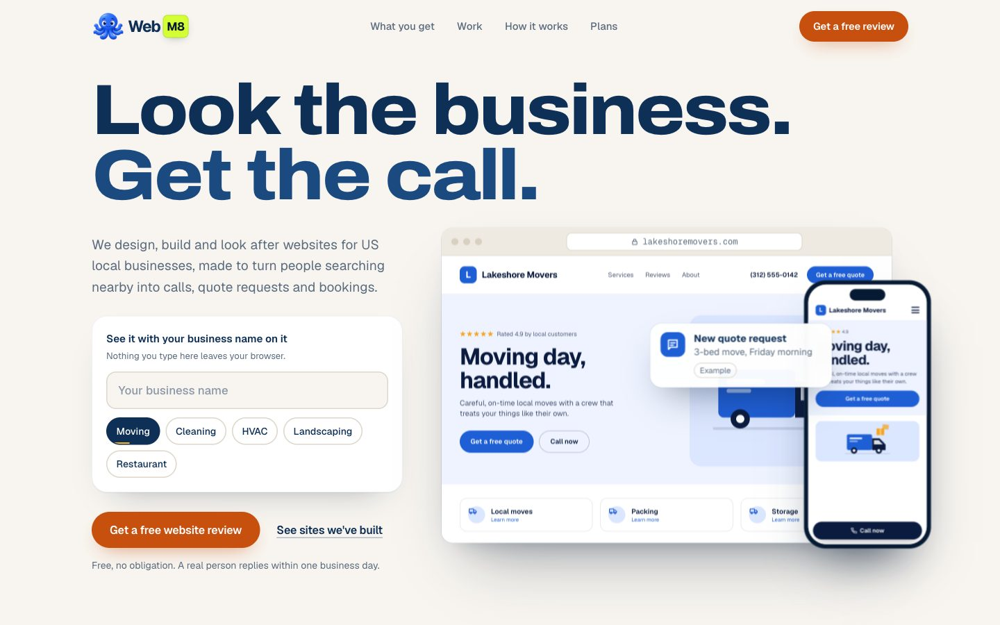
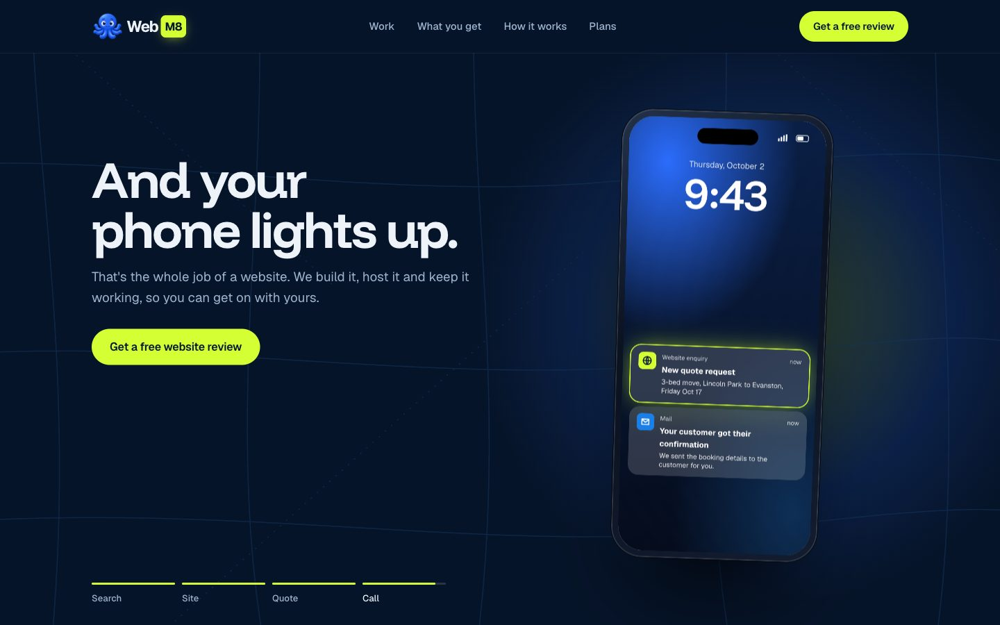

Two directions for the WebM8 homepage, built as working prototypes with the real copy, plans and portfolio. Open each one on a computer and on your phone. Type, drag, click and scroll: the interactions are the point.

Warm, personal, close to today's brand. The visitor types their business name and watches a website get built for them, live.

Dark, cinematic, more premium. The visitor picks their trade and can add their business name. Scrolling then plays one of their customers' journeys, from a local search to the owner's phone lighting up.
?trade=hvac.